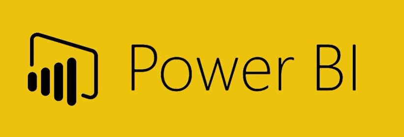
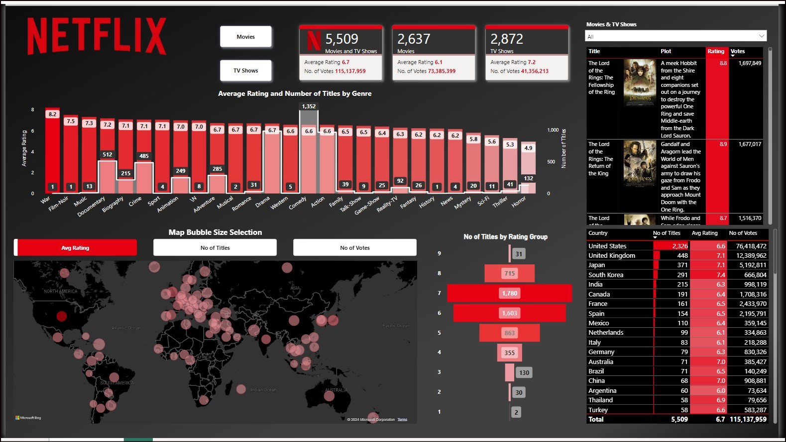
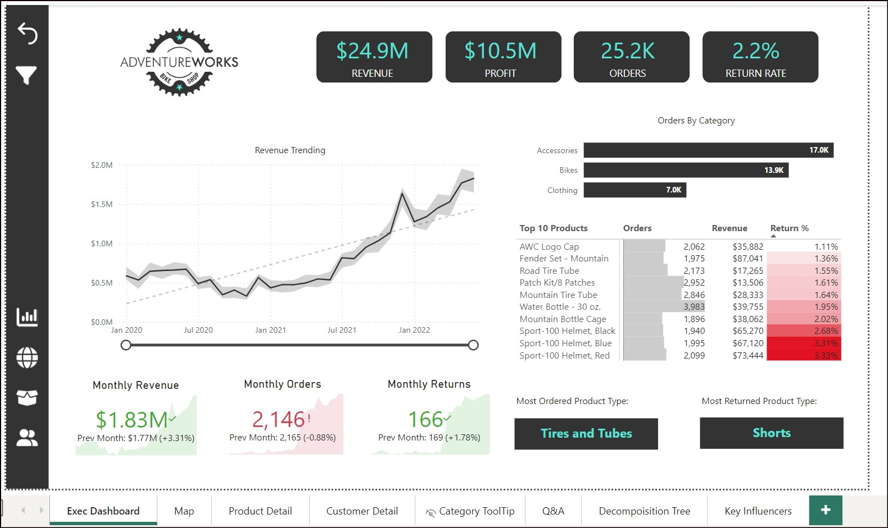
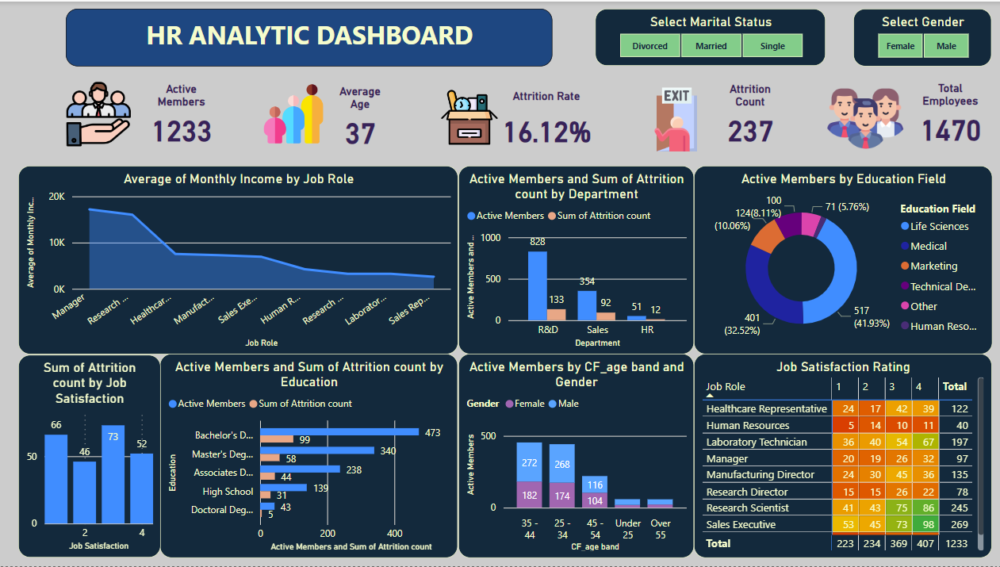
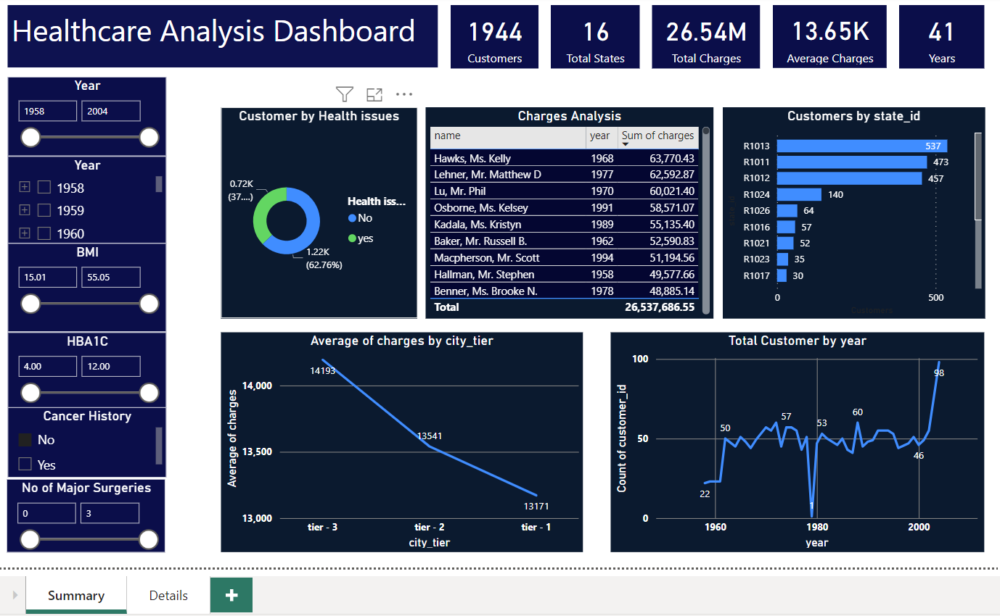
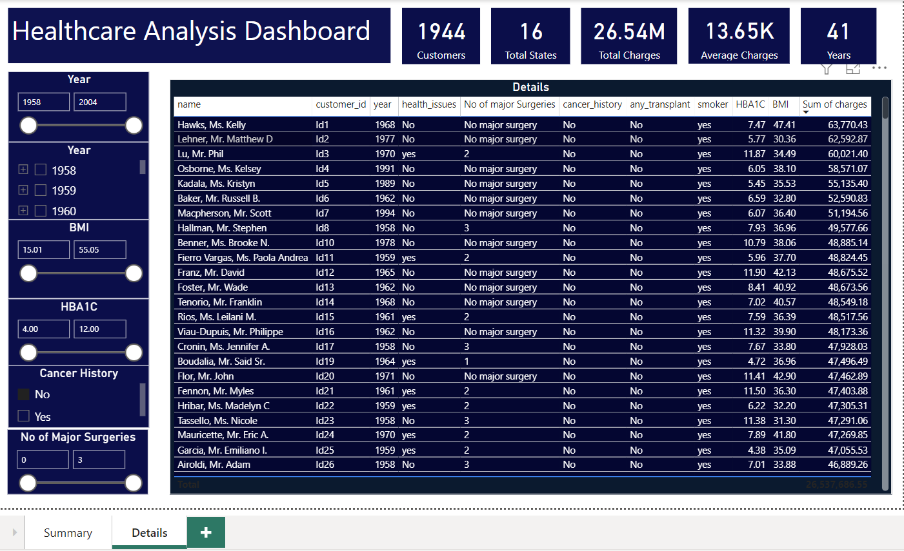

Power BI is a Microsoft tool that helps turn raw data into clear, interactive dashboards and reports. As a data analysts, it's essential because it makes data cleaning, analysis, and visualization easier, allowing them to share insights that drive better business decisions.



In this project, I am playing the role of a Data Analyst for the Federal Aviation Administration, working with a dataset of nearly 2 million U.S. commercial flights.
🔍 The goal was to build an interactive Power BI dashboard that enables stakeholders to uncover insights on flight delays and cancellations across airports and airlines.
From data preparation to visualization, each step was designed to provide actionable insights and support data-driven decisions
This dashboard analyzes Netflix's content library, viewing trends, and user preferences to provide comprehensive insights into what drives viewer engagement.

The project aimed to address key business needs such as tracking sales performance, monitoring KPIs, and analyzing trends over time. The challenge was to extract, clean, and model data from multiple sources and present it in a visually engaging and user-friendly format.

Through rigorous data cleansing and transformation processes, in this project I ensured the accuracy and reliability of HR data used in Power BI dashboards.
I developed a comprehensive Power BI HR analytics dashboard providing insights into employee demographics, attrition rates by department and education, income averages, age distribution, job satisfaction, and educational backgrounds.
This enabled HR professionals to make data-driven decisions and identify areas for improvement within the organization. I implemented KPIs, slicers, heat maps, and various visuals for effective data visualization.


The primary goal of this project is to conduct a comprehensive analysis of healthcare data, aiming to uncover valuable insights that have the potential to revolutionize decision-making in healthcare and optimize resource allocation for the betterment of patients' lives. The project centers around three crucial datasets: "hospitalization_details," "medical_examinations," and "names." It is structured into three key modules, with the initial phase dedicated to thorough data cleaning to ensure accuracy and proper structure. Once the data is refined, the second module leverages the power of SQL queries to extract meaningful and actionable insights. The third module takes a step further by visualizing the data through a meaningful and interactive Power BI Dashboard.